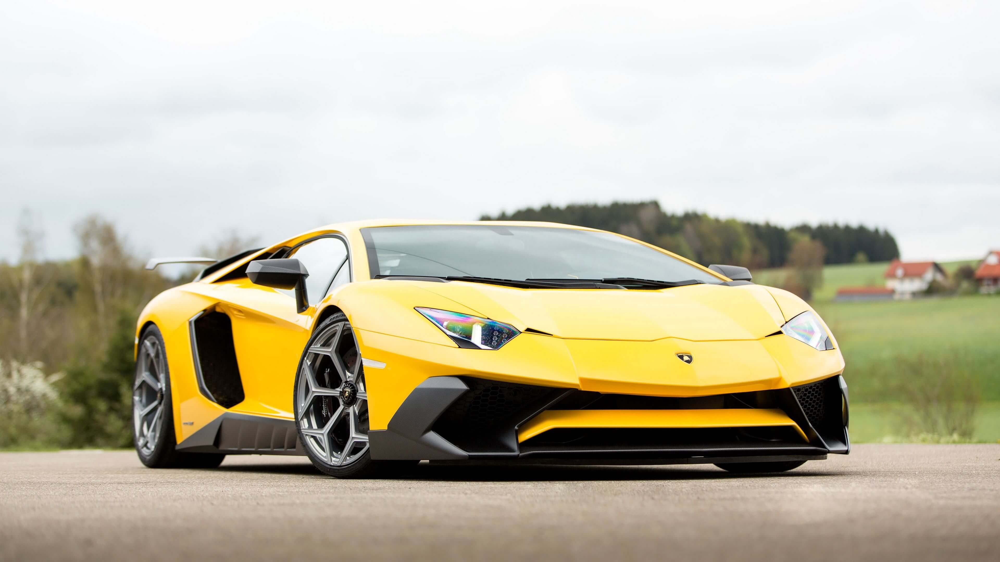
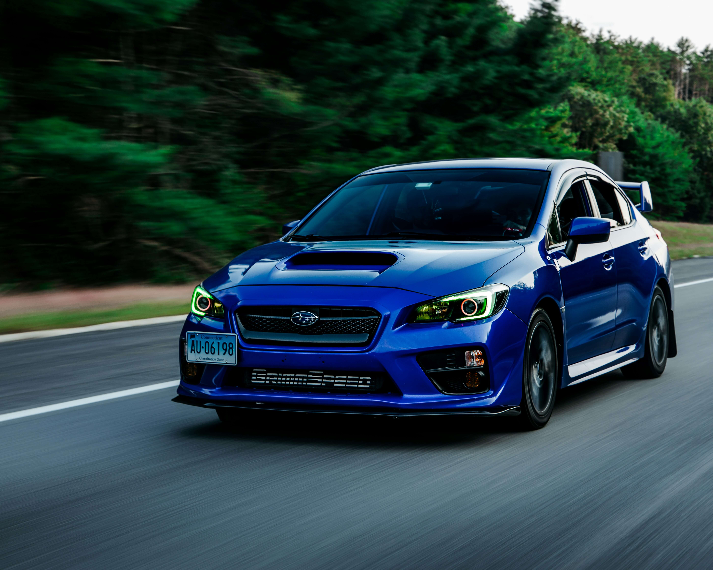

Mercedes AMG GT – Potencia alemana.
Mercedes-AMG GT
- Motor: V8 atmosférico 4L Bi-turbo+ electrico
- Potencia: 604 hp (combustion)+ 212 hp(electrico)
- Torque: 775 Nm
- Velocidad Maxima: 317 km/h
- Tracción: AWD
- Transmisión: Automática de 9 velocidades
- Peso: 2120 Kg
- 0-100km/h: 3.2s
- Año de salida: 2015
Toyota Supra – Leyenda del JDM.
Toyota Supra
- Motor: Inline-6 3.0L Twin-Turbo
- Potencia: 326 hp
- Torque: 441Nm
- Velocidad Maxima: 250km/h
- Tracción: Trasera (RWD)
- Transmisión: Manual de 6 velocidades
- Peso: 1500Kg
- 0-100km/h: 4.6s
- Año de salida: 1993
Honda NSX – El superdeportivo japonés.
Honda NSX
- Motor: V6 3.0L
- Potencia: 280 hp
- Torque: 298 Nm
- Velocidad Maxima: 270km/h
- Tracción: RWD
- Transmisión: Manual de 5 velocidades
- Peso: 1445Kg
- 0-100km/h: 5.7s
- Año de salida: 1990
Nissan GTR R34 – La máquina de los dioses del drift.
Nissan GTR R34
- Motor: Inline-6 2.6L Twin-Turbo
- Potencia: 315 hp
- Torque: 384 Nm
- Velocidad Maxima: 250km/h
- Tracción: AWD
- Transmisión: Manual de 6 velocidades
- Peso: 1600Kg
- 0-100km/h: 4.9s
- Año de salida: 1999

Lamborghini Aventador – El exotismo italiano.
Lamborghini Aventador
- Motor: V12 6.5L
- Potencia: 730 hp
Torque: 690Nm- Velocidad Maxima: 350km/h
- Tracción: AWD
- Transmisión: Automática de 7 velocidades
- Peso: 1740Kg
- 0-100km/h: 2.9s
- Año de salida: 2011

Dodge Challenger SRT Demon 170 – El muscle car más potente.
Dodge Challenger SRT Demon 170
- Motor: V8 6.2L Supercharged
- Potencia: 1025 hp
- Torque: 1280 Nm
- Velocidad Maxima: 322km/h
- Tracción: Trasera (RWD)
- Transmisión: Automática de 8 velocidades
- Peso: 1900Kg
- 0-100km/h: 1.6s
- Año de salida: 2023
Ford Mustang 1968 – El muscle car por excelencia.
Ford Mustang Super CobraJet
- Motor: V8 7L
- Potencia: 335 hp
- Torque: 597 Nm
- Velocidad Maxima: 204km/h
- Tracción: Trasera (RWD)
- Transmisión: Manual de 4 velocidades
- Peso: 1167Kg
- 0-100km/h: 6.5s
- Año de salida: 1968
Mazda RX7 – Revolucionario motor rotativo.
Mazda RX7
- Motor: 1.3L Rotary Twin-Turbo
- Potencia: 236 hp
- Torque: 294 Nm
- Velocidad Maxima: 250km/h
- Tracción: Trasera (RWD)
- Transmisión: Manual de 5 velocidades
- Peso: 1300Kg
- 0-100km/h: 5.4s
- Año de salida: 1992

Volkswagen Escarabajo – Un clásico de la historia.
Volkswagen Escarabajo
- Motor: 1.6L Boxer
- Potencia: 50 hp
- Torque: 100 Nm
- Velocidad Maxima: 140km/h
- Tracción: Trasera (RWD)
- Transmisión: Manual de 4 velocidades
- Peso: 800Kg
- 0-100km/h: 20s
- Año de salida: 1938

Subaru WRX STI – El rey del rally.
Subaru WRX STI
- Motor: 2.5L Turbo Boxer
- Potencia: 310 hp
- Torque: 407 Nm
- Velocidad Maxima: 250km/h
- Tracción: AWD
- Transmisión: Manual de 6 velocidades
- Peso: 1500Kg
- 0-100km/h: 5.2s
- Año de salida: 2015
Mitsubishi Lancer Evolution – El ícono del rally.
Mitsubishi Lancer Evolution
- Motor: 2.0L Turbo Inline-4
- Potencia: 276 hp
- Torque: 392 Nm
- Velocidad Maxima: 250km/h
- Tracción: AWD
- Transmisión: Manual de 5 velocidades
- Peso: 1500Kg
- 0-100km/h: 5.4s
Mercedes CLK GTR – La leyenda de Le Mans.
Mercedes CLK GTR
- Motor: V12 6.9L
- Potencia: 600 hp
- Torque: 775 Nm
- Velocidad Maxima: 320km/h
- Tracción: Trasera (RWD)
- Transmisión: Manual de 6 velocidades
- Peso:1440 kg
- 0-100km/h: 3.8s
- Año de salida: 1998
Dodge Viper – El monstruo americano.
Dodge Viper
- Motor: V10 8.4L
- Potencia: 645 hp
- Torque: 813 Nm
- Velocidad Maxima: 330km/h
- Tracción: Trasera (RWD)
- Transmisión: Manual de 6 velocidades
- Peso: 1525Kg
- 0-100km/h: 3.5s
- Año de salida: 1992
Chevrolet Camaro ZL1 – Potencia y agresividad.
Chevrolet Camaro ZL1
- Motor: V8 6.2L Supercharged
- Potencia: 650 hp
- Torque: 881 Nm
- Velocidad Maxima: 320km/h
- Tracción: Trasera (RWD)
- Transmisión: Automática de 10 velocidades
- Peso: 1700Kg
- 0-100km/h: 3.5s
- Año de salida: 2017
Dodge Challenger R/T – El muscle car clásico.
Dodge Challenger R/T
- Motor: V8 7.0L Hemi
- Potencia: 425 hp
- Torque: 660 Nm
- Velocidad Maxima: 250km/h
- Tracción: Trasera (RWD)
- Transmisión: Manual de 4 velocidades
- Peso: 1600Kg
- 0-100km/h: 6.0s
- Año de salida: 1970
Ford F-150 Raptor R– La bestia todoterreno.
Ford F-150 Raptor R
- Motor: V8 5.2L Supercharged
- Potencia: 700 hp
- Torque: 868 Nm
- Velocidad Maxima: 250km/h
- Tracción: AWD
- Transmisión: Automática de 10 velocidades
- Peso: 2800Kg
- 0-100km/h: 4.0s
- Año de salida: 2022
Audi Sport Quattro S1 E2 – El rey del rally.
Audi Sport Quattro S1 E2
- Motor: Inline-5 2.1L Turbo
- Potencia: 600 hp
- Torque: 750 Nm
- Velocidad Maxima: 250km/h
- Tracción: AWD (Quattro)
- Transmisión: Manual de 6 velocidades
- Peso: 1090Kg
- 0-100km/h: 3.1s (En tierra)
- Año de salida: 1984
Lancia Stratos HF – El ícono del rally.
Lancia Stratos HF
- Motor: V6 2.4L (Ferrari)
- Potencia: 320 hp
- Torque: 285 Nm
- Velocidad Maxima: 230km/h
- Tracción: Trasera (RWD)
- Transmisión: Manual de 5 velocidades
- Peso: 850Kg
- 0-100km/h: 5.0s
- Año de salida: 1971

Kenworth W900 – El rey de la carretera.
Kenworth W900
- Motor: Cummins ISX 15L
- Potencia: 600 hp
- Torque: 1850 Nm
- Velocidad Maxima: 160km/h
- Tracción: Trasera (RWD)
- Transmisión: Manual de 10 velocidades
- Peso: 8000Kg
- 0-100km/h: 20s
- Año de salida: 1961
Plymouth Superbird – El muscle car más raro.
Plymouth Superbird
- Motor: V8 7.0L Hemi
- Potencia: 425 hp
- Torque: 660 Nm
- Velocidad Maxima: 250km/h
- Tracción: Trasera (RWD)
- Transmisión: Manual de 4 velocidades
- Peso: 1600Kg
- 0-100km/h: 6.0s
- Año de salida: 1970
BMW M3 E30 – El clásico de los clásicos.
BMW M3 E30
- Motor: Inline-4 2.3L
- Potencia: 192 hp
- Torque: 245 Nm
- Velocidad Maxima: 240km/h
- Tracción: Trasera (RWD)
- Transmisión: Manual de 5 velocidades
- Peso: 1300Kg
- 0-100km/h: 6.5s
- Año de salida: 1982
Mercedes 190E 2.5-16 – El clásico de los clásicos.
Mercedes 190E 2.5-16
- Motor: Inline-4 2.5L
- Potencia: 185 hp
- Torque: 240 Nm
- Velocidad Maxima: 240km/h
- Tracción: Trasera (RWD)
- Transmisión: Manual de 5 velocidades
- Peso: 1300Kg
- 0-100km/h: 6.5s
- Año de salida: 1984
Mazda 787B – El rey de Le Mans.
Mazda 787B
- Motor: 4-Rotor Wankel 2.6L
- Potencia: 700 hp
- Torque: 700 Nm
- Velocidad Maxima: 330km/h
- Tracción: Trasera (RWD)
- Transmisión: Manual de 6 velocidades
- Peso: 900Kg
- 0-100km/h: 2.7s
- Año de salida: 1991
Honda S2000 – El roadster japonés.
Honda S2000
- Motor: Inline-4 2.0L
- Potencia: 240 hp
- Torque: 208 Nm
- Velocidad Maxima: 240km/h
- Tracción: Trasera (RWD)
- Transmisión: Manual de 6 velocidades
- Peso: 1300Kg
- 0-100km/h: 6.2s
- Año de salida: 1999